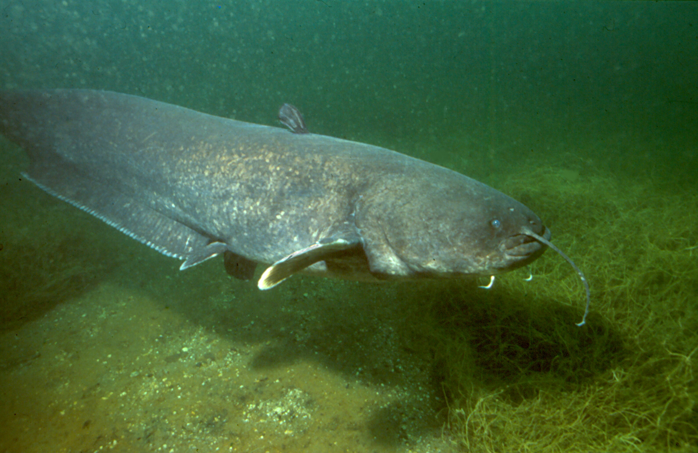

Der Europäische Wels oder Flusswels ist der größte reine Süßwasserfisch Europas und neben dem Aristoteleswels die einzige europäische Art aus der Familie der Echten Welse. Regional wird er auch als Waller oder Schaidfisch sowie mit zahlreichen Abwandlungen dieser Namen bezeichnet. Welse sind vorwiegend nacht- und dämmerungsaktive Raubfische, die sich von lebenden und toten Fischen, aber auch von Wirbellosen und gelegentlich von kleinen Wasservögeln und Säugetieren ernähren. Ihre Aktivität ist im Jahresverlauf stark von der Temperatur und der Verfügbarkeit von Beutetieren abhängig und erreicht im Frühjahr nach der Winterruhe sowie im Spätherbst nach dem Ablaichen ein Maximum. Das Verbreitungsgebiet des Welses erstreckt sich von Mittel- und Osteuropa bis Zentralasien. Dabei werden bevorzugt große Flüsse und Seen mit schlammigem Grund besiedelt. Welse kommen aber auch häufig in Seen mit geringem Salzgehalt, wie dem Kaspischen Meer, sowie in Brackwasserbereichen von Binnenmeeren, wie etwa in Teilen der Ostsee und des Schwarzen Meeres, vor. Die Art wird seit der Antike befischt und ist heute vor allem in Osteuropa von wirtschaftlicher Bedeutung, wo sie zunehmend auch in Aquakultur gezogen wird. In Mitteleuropa sind Welse dagegen vorwiegend als Sportfische bei Anglern beliebt und wurden deshalb auch in verschiedenen Gebieten, in denen sie ursprünglich nicht vorkamen, angesiedelt. Die Bestände sind heute meist stabil, teilweise aber von Besatz durch den Menschen abhängig.
Welse erreichen, abhängig von ihrem Lebensraum, meist Körperlängen von einem bis eineinhalb Metern und dabei ein Gewicht von etwa 10 bis 50 Kilogramm. Da die Tiere zeitlebens wachsen, können sie allerdings auch deutlich größer und schwerer werden. Die Angaben über die Maximalmaße unterscheiden sich dabei bei verschiedenen Autoren beträchtlich. Häufig wird heute eine Länge von bis zu drei Metern und ein Gewicht von dann 150 Kilogramm angegeben. Die verlässlich dokumentierten größten Fänge mit der Angel waren ein 144 Kilogramm schweres und 2,78 Meter langes Tier aus dem Po und ein 148 Kilogramm schweres Exemplar, das in Bulgarien gefangen wurde. Der Wels ist damit der größte ständig im Süßwasser lebende Fisch Europas. Er wird nur von den Stören (Acipenser) übertroffen, die allerdings anadrome Wanderfische sind, die nur zum Laichen in Flüsse eindringen. Das Alter kann anhand der Zuwachsringe der Wirbel oder Brustflossenstrahlen bestimmt werden. Das höchste dokumentierte Alter liegt bei 60 Jahren in Gefangenschaft und bei 80 Jahren für ein wildlebendes Tier. Schätzungen für das mögliche Höchstalter belaufen sich auf etwa 100 Jahre.